<!DOCTYPE lake>
<blockquote data-lake-id="u893b9552" id="u893b9552"><p data-lake-id="ufd228226" id="ufd228226"><span data-lake-id="u52f563cc" id="u52f563cc">使用ubuntu18编译</span></p></blockquote><h1 data-lake-id="M9QbG" data-lake-index-type="2" id="M9QbG"><span data-lake-id="uac078d5b" id="uac078d5b">安装必要的依赖</span></h1><span class="yuque-card-unsupported">[codeblock]</span><h1 data-lake-id="Yj2fJ" data-lake-index-type="2" id="Yj2fJ"><span data-lake-id="u4f785ba4" id="u4f785ba4" style="color: rgb(60, 60, 67)">泰山派SDK板级配置</span></h1><p data-lake-id="ud8db8d09" id="ud8db8d09"><strong><span data-lake-id="uc3a7c568" id="uc3a7c568">方法一:</span></strong></p><span class="yuque-card-unsupported">[codeblock]</span><p data-lake-id="uf3530be4" id="uf3530be4"><strong><span data-lake-id="u51392f16" id="u51392f16">方法二:</span></strong></p><span class="yuque-card-unsupported">[codeblock]</span><p data-lake-id="ud65a0bdc" id="ud65a0bdc"><span class="lake-fontsize-12" data-lake-id="uba440554" id="uba440554" style="color: rgb(60, 60, 67)">运行命令选择BoardConfig-rk3566-tspi-v10.mk，这里序列号是3，所以我们选择3并回车</span></p><p data-lake-id="u39f1973d" id="u39f1973d">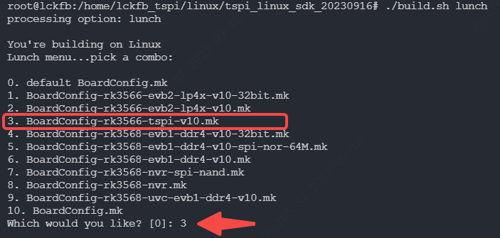</p><p data-lake-id="ue00a481a" id="ue00a481a"><span class="lake-fontsize-12" data-lake-id="ua6555dca" id="ua6555dca" style="color: rgb(60, 60, 67)">查看配置是否生效</span></p><span class="yuque-card-unsupported">[codeblock]</span><p data-lake-id="udddc401b" id="udddc401b"><span class="lake-fontsize-12" data-lake-id="u79d1e09d" id="u79d1e09d" style="color: rgb(60, 60, 67)">运行后可以看到配置文件正是tisp，证明配置生效</span></p><p data-lake-id="ue3de21d2" id="ue3de21d2">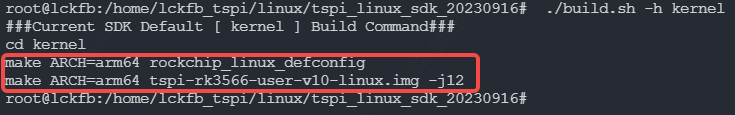</p><h1 data-lake-id="VIUhR" data-lake-index-type="2" id="VIUhR"><span data-lake-id="u98546b61" id="u98546b61">全部编译</span></h1><blockquote data-lake-id="uf8690b83" id="uf8690b83"><p data-lake-id="u66c73549" id="u66c73549"><span data-lake-id="u631bca37" id="u631bca37">编译buildroot文件系统</span></p></blockquote><h2 data-lake-id="lBUAl" data-lake-index-type="2" id="lBUAl"><span data-lake-id="ub32950f6" id="ub32950f6" style="color: rgb(60, 60, 67)">选择buildrot操作系统</span></h2><span class="yuque-card-unsupported">[codeblock]</span><h2 data-lake-id="FsMP7" data-lake-index-type="2" id="FsMP7"><span data-lake-id="u0b62ada8" id="u0b62ada8" style="color: rgb(60, 60, 67)">运行自动全编译命令</span></h2><span class="yuque-card-unsupported">[codeblock]</span><h2 data-lake-id="WhG9E" data-lake-index-type="2" id="WhG9E"><span data-lake-id="ua2b926e3" id="ua2b926e3" style="color: rgb(60, 60, 67)">第一次编译需要选择电源</span></h2><p data-lake-id="u2a135f1a" id="u2a135f1a">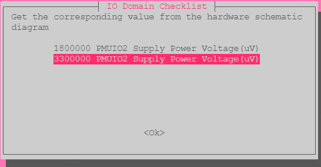</p><p data-lake-id="ueb4d087b" id="ueb4d087b">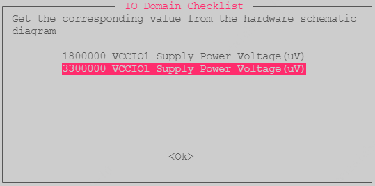</p><p data-lake-id="u5eb5d22c" id="u5eb5d22c">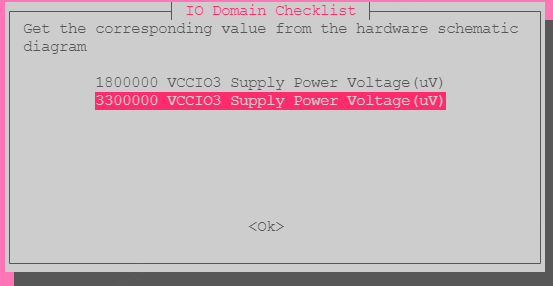</p><p data-lake-id="u27d4f87f" id="u27d4f87f">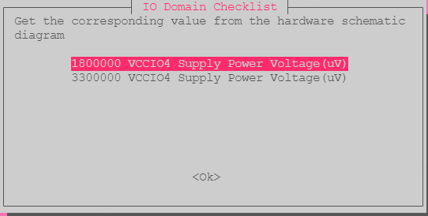</p><p data-lake-id="u64994e00" id="u64994e00">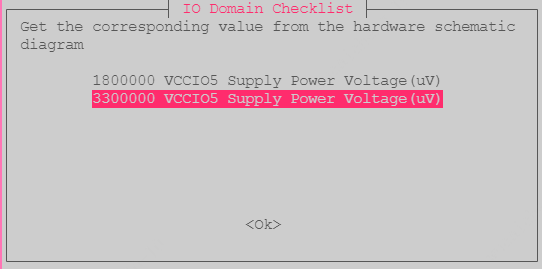</p><p data-lake-id="ud10271ec" id="ud10271ec">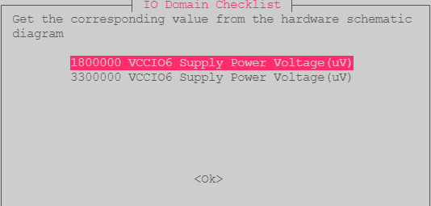</p><p data-lake-id="u272febf9" id="u272febf9">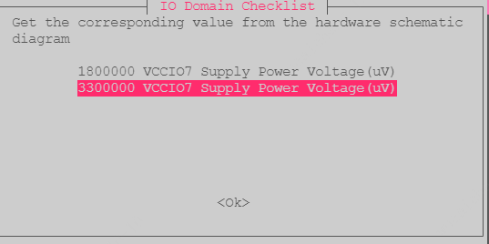</p><blockquote data-lake-id="u04dbd708" id="u04dbd708"><p data-lake-id="u83e4600e" id="u83e4600e"><span data-lake-id="uf26a4a77" id="uf26a4a77">33-33-33-18-33-18-33</span></p></blockquote><h2 data-lake-id="RP0oC" data-lake-index-type="2" id="RP0oC"><span data-lake-id="u259f42cb" id="u259f42cb" style="color: rgb(60, 60, 67)">编译成功：</span></h2><p data-lake-id="u6129e595" id="u6129e595">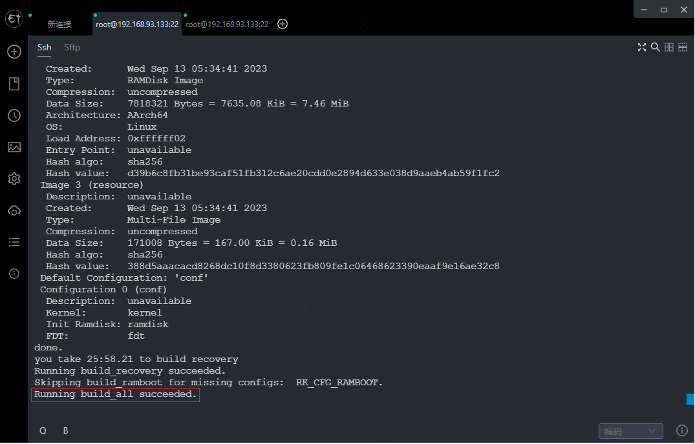</p><h2 data-lake-id="HAy7K" data-lake-index-type="2" id="HAy7K"><span class="lake-fontsize-12" data-lake-id="ube51e97c" id="ube51e97c" style="color: rgb(60, 60, 67)">固件打包</span></h2><span class="yuque-card-unsupported">[codeblock]</span><h2 data-lake-id="HlxH0" data-lake-index-type="2" id="HlxH0"><span data-lake-id="u49c38580" id="u49c38580">rockdev下查看固件</span></h2><p data-lake-id="uc5054144" id="uc5054144">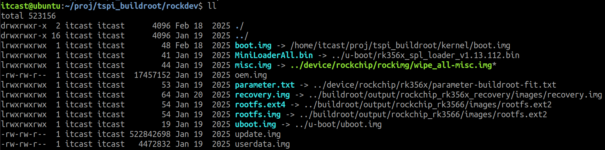</p><h1 data-lake-id="wV9X4" data-lake-index-type="2" id="wV9X4"><span data-lake-id="ud9b8c00a" id="ud9b8c00a">单独编译u-boot、内核及文件系统</span></h1><span class="yuque-card-unsupported">[codeblock]</span><p data-lake-id="ub1104b6f" id="ub1104b6f"><br/></p><p data-lake-id="ud052026a" id="ud052026a"><br/></p>